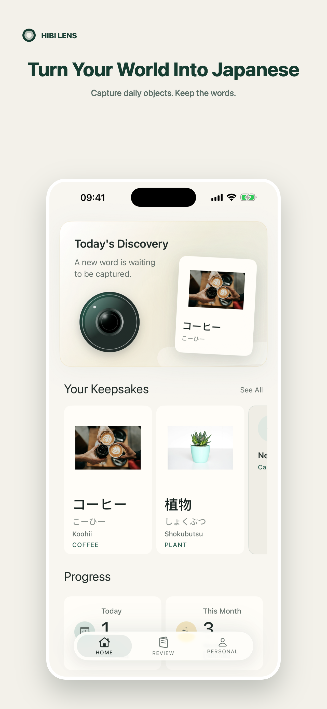
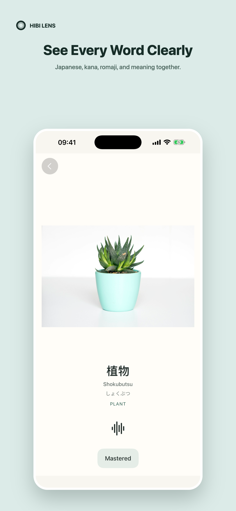
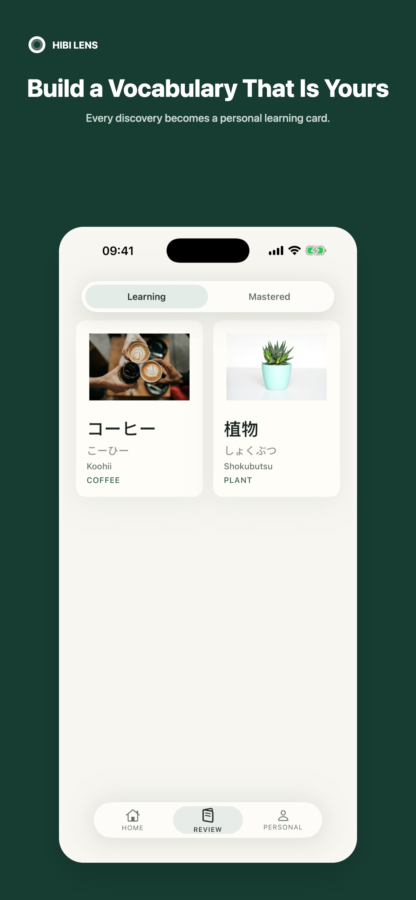

What is Hibi Lens?
Hibi Lens is an iPhone app that identifies everyday objects from photos and turns them into Japanese vocabulary cards. The name also appears as HibiLens in the website and GitHub URLs.
A Japanese language camera
Photograph the things around you and turn them into Japanese vocabulary cards you can keep, hear, and review.
Available for iPhone · No account required

Notice an everyday object
Make it a Japanese card
Build your own collection
Notice & Capture
Take a photo or choose one from your library. Hibi Lens recognizes an everyday object and finds the Japanese word for it.
Understand
See the Japanese term, kana, romaji, meaning, and pronunciation together—clear enough to understand at a glance.

Keep & Review
Every discovery becomes a card you can keep, review, and move from learning to mastered.

Private by design
Recognition happens on your device. Your photos, vocabulary cards, and learning progress stay there too. Hibi Lens does not require an account.
Questions & Answers
Hibi Lens is an iPhone app that identifies everyday objects from photos and turns them into Japanese vocabulary cards. The name also appears as HibiLens in the website and GitHub URLs.
Take a photo or choose one from your library. Hibi Lens identifies a supported everyday object, then shows its Japanese term, reading, meaning, and pronunciation.
No. Image recognition and vocabulary lookup happen on your device. Your photos, cards, and learning progress stay there.
No account is required. Hibi Lens is designed to work entirely on your iPhone.
A card can include the Japanese word, kana, kanji, romaji, meaning, and pronunciation, depending on the word.
Start with what you see today
Turn the world around you into a Japanese vocabulary collection that is entirely your own.